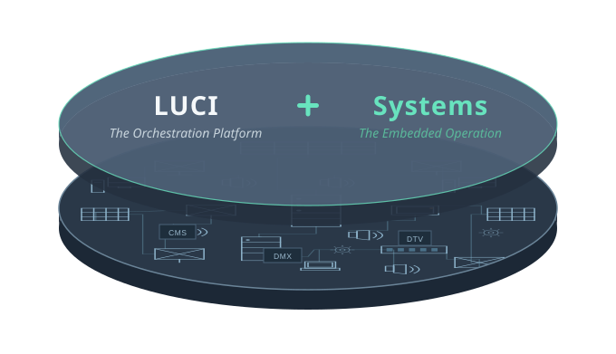

The orchestration engine for enterprise multimedia
One interface to control, automate, and execute the entire guest experience.
Prepared for
Sample client logo — swap per send
What LUCI is
LUCI Systems orchestrates every layer of technology running your property — AV, signage, building, and operational infrastructure — from a single interface your team controls from anywhere.

LUCI is fueled by two forces working as one.
LUCI
The Orchestration Platform
The software that runs your entire AV environment from one interface.
Systems
The Embedded Operation
The engineers who deploy, operate, and refine it alongside your team.
Rather than adding layers to your stack, LUCI reduces the variables, hardware, and interfaces your team has to manage.
LUCI · The Orchestration Platform
Most properties run on a dozen disconnected tools, each added by a different integrator, each with its own interface.
LUCI brings all of it under one point of control.
The LUCI interface — every endpoint, zone, and screen on one live floor plan.
Key features
Map-based dashboard
Open API integration
PIN-delegated control
Predictive monitoring & alerts
Mobile control
Scalable by architecture
Systems · The Embedded Operation
The team that fuels the platform. One accountable team of A/V engineers gets you live — then stays, operating and refining LUCI alongside your property for the life of the relationship.

Proven on the floor
Every team that runs the floor works from LUCI — at the properties where downtime isn’t an option.
-
General management
One view of everything guests see and hear across the property.
-
Casino operations
Direct guest attention and respond to any moment from a single screen.
-
Marketing
The right content in the right zone at the right moment — changed live.
-
A/V
Operate every display, source, and zone from one interface.
-
Finance
One predictable annual line item instead of unplanned refresh cycles.
-
IT
Every endpoint on the network you already run — no proprietary hardware.
Next step
A property that gets simpler as it grows.
Schedule a scoping session to map your property’s multimedia environment and define a deployment path.
LUCI Systems, Inc.
6280 S. Valley View Blvd., Bldg. B / Ste. 208
Las Vegas, NV 89118